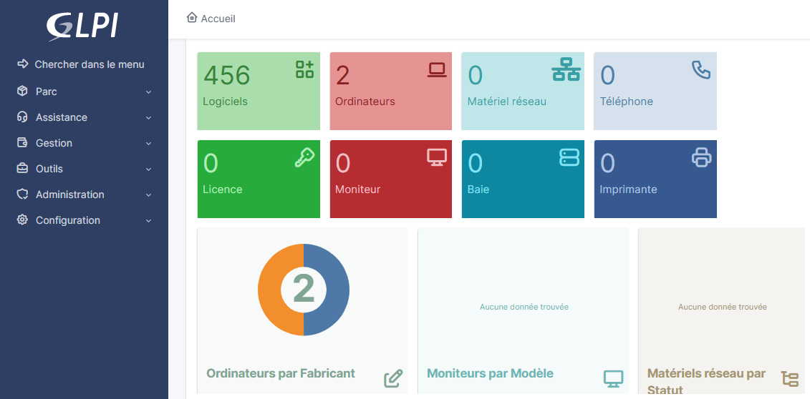

Octobre 2025
Dans le cadre d'un TP du cours de Support et mise à disposition de services informatiques, j'ai déployé une solution GLPI sur une machine virtuelle Debian afin d'automatiser le recensement des équipements (postes, serveurs, périphériques, logiciels) et centraliser les informations d'inventaire au sein d'une interface web.
# Mise à jour du système
apt update && apt upgrade -y
# Installation Apache, PHP et extensions
apt install apache2 mariadb-server -y
apt install php libapache2-mod-php php-mysql php-curl php-gd php-intl php-zip php-xml php-mbstring -y
# Activation d'Apache
systemctl enable apache2
systemctl start apache2
# Sécurisation MariaDB
mysql_secure_installation# Création de la base GLPI
mysql -u root -p
CREATE DATABASE glpi CHARACTER SET utf8mb4 COLLATE utf8mb4_unicode_ci;
CREATE USER 'glpi'@'localhost' IDENTIFIED BY 'mot_de_passe_securise';
GRANT ALL PRIVILEGES ON glpi.* TO 'glpi'@'localhost';
FLUSH PRIVILEGES;
EXIT;# Téléchargement
cd /var/www/html/
wget https://github.com/glpi-project/glpi/releases/download/10.0.15/glpi-10.0.15.tgz
# Extraction
tar -xvzf glpi-10.0.15.tgz
# Droits
chown -R www-data:www-data glpi
chmod -R 755 glpi
# Activation du module rewrite
a2enmod rewrite
systemctl restart apache2
L'installation finale s'effectue via l'interface web
(http://IP_SERVEUR/glpi) en renseignant les paramètres de connexion à la base de données.
Après installation, le dossier /install est supprimé pour des raisons de sécurité.
Afin d'automatiser la remontée des informations matérielles et logicielles, j'ai configuré l'agent GLPI Inventory :
glpi-agent --server http://IP_SERVEUR/glpiLes équipements remontent automatiquement dans l'interface GLPI avec :

Septembre 2024 - Juin 2026
Dans le cadre de mon alternance, j’ai participé à la mise en œuvre et au respect des standards internes de l’entreprise concernant la gestion des identités et des accès utilisateurs via Microsoft Entra ID.
Ces standards étaient formalisés dans une documentation interne accessible via Confluence, servant de référentiel pour l’ensemble de l’équipe IT.
Le respect des standards internes permet d’assurer une gestion cohérente, sécurisée et homogène des identités et des accès au sein du système d’information.
Juillet 2025
Dans le cadre de mon alternance, j’ai participé à une revue des habilitations utilisateurs sur plusieurs applications critiques de l’entreprise (Back-Office, CRM, GED, Talkdesk). Cette mission s’inscrivait dans une démarche de conformité à la loi DORA (Digital Operational Resilience Act), qui impose un contrôle strict des accès aux systèmes d’information critiques afin de limiter les risques opérationnels et de sécurité.
L’objectif principal était de vérifier que chaque utilisateur disposait uniquement des droits nécessaires à l’exercice de ses fonctions, conformément au principe du moindre privilège.
Cette revue des habilitations a permis de renforcer la sécurité des applications critiques en garantissant une gestion rigoureuse des accès utilisateurs. La démarche a contribué à réduire les risques liés aux accès excessifs ou non maîtrisés et à améliorer la conformité réglementaire de l’entreprise vis-à-vis de la loi DORA.
Septembre 2025 - Juin 2026
En entreprise, j’ai participé à la gestion du patch management afin d’assurer la continuité et la sécurité des services informatiques. Cette mission visait à garantir que l’ensemble des postes utilisateurs disposaient des mises à jour critiques nécessaires.
En automne 2025, une vulnérabilité critique affectant le navigateur Google Chrome a été publiée, exposant les postes à des risques de compromission via la navigation web. Il était donc nécessaire de déployer rapidement le correctif sur l’ensemble du parc sans interrompre l’activité des utilisateurs.
Le déploiement automatisé du correctif via Intune a permis de corriger rapidement la vulnérabilité affectant Google Chrome tout en assurant la continuité de service pour les utilisateurs.
Septembre 2024 - Août 2025
Dans le cadre de mon alternance, j’ai été amenée à intervenir sur des demandes de restauration de fichiers supprimés ou modifiés par erreur par les utilisateurs sur SharePoint et OneDrive. Cette activité faisait partie du support quotidien et visait à garantir la disponibilité et l’intégrité des données.
Ces interventions ont permis de rétablir rapidement l’accès aux données sans interruption prolongée de l’activité des utilisateurs. Elles démontrent l’importance d’une bonne maîtrise des mécanismes de sauvegarde et de restauration intégrés aux outils Microsoft 365.
Septembre 2024 - Août 2025
Dans le cadre de mon alternance, j’ai participé au processus d’onboarding des nouveaux collaborateurs au sein de l’entreprise. Cette activité visait à garantir une prise de poste conforme aux règles d’utilisation des ressources numériques dès l’arrivée de l’utilisateur.
L’objectif principal était de sensibiliser les nouveaux arrivants aux bonnes pratiques informatiques et de s’assurer du respect de la charte informatique de l’entreprise.
Cette phase d’onboarding permet de poser un cadre clair dès l’arrivée du collaborateur et de limiter les comportements à risque liés à une mauvaise utilisation des ressources numériques.
Septembre 2025 - Juin 2026
En tant que cybersecurity apprentice, j’ai participé à la conception, au déploiement et au suivi de plusieurs campagnes de phishing simulées auprès des collaborateurs.
Ces campagnes avaient pour objectif de mesurer le niveau de vigilance des utilisateurs face aux tentatives d’hameçonnage, de vérifier le respect des règles d’utilisation des ressources numériques et d’améliorer les comportements à risque.
Les campagnes ont été réalisées à l’aide de Microsoft Defender.
À l’issue de chaque campagne, j’ai analysé les résultats à l’aide des statistiques fournies par Microsoft Defender :
La mise en place de plusieurs campagnes de phishing interne a permis d’améliorer significativement la vigilance des utilisateurs face aux menaces.
L’analyse des statistiques a démontré une réelle progression des bonnes pratiques, avec une diminution des comportements à risque au fil des campagnes.
Septembre 2025 - Juin 2026
À la suite des campagnes de phishing interne, il est apparu que certains collaborateurs échouaient de manière répétée aux tests de vigilance (clics sur les liens, saisie d’identifiants).
Afin de renforcer la sécurité globale du système d’information et d’améliorer durablement les comportements des utilisateurs, j’ai participé à l’organisation de sessions de sensibilisation pédagogiques dédiées à la cybersécurité et au phishing.
Les ateliers pédagogiques ont permis de renforcer la compréhension des risques liés au phishing et d’améliorer significativement les comportements des utilisateurs face aux menaces cyber.